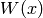
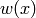
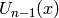
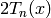
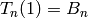
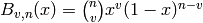

New in version 0.4.
7. The series module¶
Table of contents
This module implements the most common polynomial sequences, like Fibonacci’s sequence (fibonacci())
7.1. Lucas polynomials sequences¶
- class pypol.series.LucasSeq(p, q, type='W')[source]¶
“The Lucas polynomial sequence is a pair of generalized polynomials which generalize the Lucas sequence to polynomials ...” [MathWorld]
Parameters: - p – The p parameter
- q – The q parameter
- zero (pypol.Polynomial) – The first element of the sequence (at index 0)
- one (pypol.Polynomial) – The second element of the sequence (at index 1)
Setting different values for p and q we obtain some polynomial sequences, for every p and q pair there are two polynomials sequences,  and :
p q W(x) w(x) x 1 Fibonacci polynomials (fibonacci()) Lucas polynomials (lucas()) 2x 1 Pell polynomials (pell()) Pell-Lucas polynomials (pell_lucas()) 1 2x Jacobsthal polynomials (jacobsthal()) Jacobsthal-Lucas polynomials (jacob_lucas()) 3x -2 Fermat polynomials (fermat()) Fermat-Lucas polynomials (fermat_lucas()) 2x -1 Chebyshev polynomials of the second kind  (chebyshev_u()) Chebyshev polynomials of the first kind  (chebyshev_t()) The starting value for the polynomials is always 2, for the polynomials is always a null polynomial.
[MathWorld] Weisstein, Eric W. “Lucas Polynomial Sequence. “ From MathWorld – A Wolfram Web Resource. New in version 0.4.
- LucasSeq.__call__(n)[source]¶
Returns the n-th element of the sequence
Parameters: n (integer) – the n-th element of the sequence Raises : ValueError if n is negative Return type: pypol.Polynomial >>> from pypol import * >>> from pypol.series import * >>> >>> fibo = LucasSeq(x, ONE) >>> fibo(0) >>> fibo(1) + 1 >>> fibo(12) + x^11 + 10x^9 + 36x^7 + 56x^5 + 35x^3 + 6x >>> fibo(19) + x^18 + 17x^16 + 120x^14 + 455x^12 + 1001x^10 + 1287x^8 + 924x^6 + 330x^4 + 45x^2 + 1 >>> f = fibo(45) >>> f = fibo(65) ## Almost instantaneous
- LucasSeq.reset_cache()[source]¶
Resets the cache, i.e. sets it to list containing only the first 2 values of the series (self.zero and self.one)
- pypol.series.fibonacci(n)[source]¶
Returns the n-th Fibonacci polynomial.
Raises : ValueError if n is negative Return type: pypol.Polynomial Examples
>>> fibonacci(0) >>> fibonacci(1) + 1 >>> fibonacci(2) + x >>> fibonacci(3) + x^2 + 1 >>> fibonacci(4) + x^3 + 2x >>> fibonacci(5) + x^4 + 3x^2 + 1 >>> fibonacci(6) + x^5 + 4x^3 + 3x >>> fibonacci(23) + x^22 + 21x^20 + 190x^18 + 969x^16 + 3060x^14 + 6188x^12 + 8008x^10 + 6435x^8 + 3003x^6 + 715x^4 + 66x^2 + 1 >>> fibonacci(100) + x^99 + 98x^97 + 4656x^95 + 142880x^93 ... + 197548686920970x^17 + 22057981462440x^15 + 1889912732400x^13 + 119653565850x^11 + 5317936260x^9 + 154143080x^7 + 2598960x^5 + 20825x^3 + 50x >>> fibonacci(200) + x^199 + 198x^197 + ... + 15913388077274800x^13 + 249145778809200x^11 + 2747472247520x^9 + 19813501785x^7 + 83291670x^5 + 166650x^3 + 100x >>> len(fibonacci(300)) 150 >>> len(str(fibonacci(300))) 8309
The Fibonacci polynomials are the W-polynomials in the Lucas sequence (LucasSeq) obtained setting p = x and q = 1:
>>> from pypol import x, ONE >>> from pypol.series import LucasSeq >>> >>> fibonacci_poly = LucasSeq(x, ONE) >>> fibonacci_poly(0) ## A null polynomial >>> fibonacci_poly(1) + 1 >>> fibonacci_poly(2) + x >>> fibonacci_poly(3) + x^2 + 1 >>> fibonacci_poly(6) + x^5 + 4x^3 + 3x >>> fibonacci_poly(16) + x^15 + 14x^13 + 78x^11 + 220x^9 + 330x^7 + 252x^5 + 84x^3 + 8x >>> fibonacci_poly(24) + x^23 + 22x^21 + 210x^19 + 1140x^17 + 3876x^15 + 8568x^13 + 12376x^11 + 11440x^9 + 6435x^7 + 2002x^5 + 286x^3 + 12x >>> fibonacci_poly(54) + x^53 + 52x^51 + 1275x^49 + 19600x^47 + 211876x^45 + 1712304x^43 + 10737573x^41 + 53524680x^39 + 215553195x^37 + 708930508x^35 + 1917334783x^33 + 4280561376x^31 + 7898654920x^29 + 12033222880x^27 + 15084504396x^25 + 15471286560x^23 + 12875774670x^21 + 8597496600x^19 + 4537567650x^17 + 1855967520x^15 + 573166440x^13 + 129024480x^11 + 20160075x^9 + 2035800x^7 + 118755x^5 + 3276x^3 + 27x >>> fibonacci_poly(54) ## Instantaneous + x^53 + 52x^51 + 1275x^49 + 19600x^47 + 211876x^45 + 1712304x^43 + 10737573x^41 + 53524680x^39 + 215553195x^37 + 708930508x^35 + 1917334783x^33 + 4280561376x^31 + 7898654920x^29 + 12033222880x^27 + 15084504396x^25 + 15471286560x^23 + 12875774670x^21 + 8597496600x^19 + 4537567650x^17 + 1855967520x^15 + 573166440x^13 + 129024480x^11 + 20160075x^9 + 2035800x^7 + 118755x^5 + 3276x^3 + 27x
New in version 0.3.
- pypol.series.lucas(n)[source]¶
Returns the n-th Lucas polynomial.
Raises : ValueError if n is negative Return type: pypol.Polynomial Examples
>>> lucas(0) + 2 >>> lucas(1) + x >>> lucas(2) + x^2 + 2 >>> lucas(3) + x^3 + 3x >>> lucas(4) + x^4 + 4x^2 + 2 >>> lucas(14) + x^14 + 14x^12 + 77x^10 + 210x^8 + 294x^6 + 196x^4 + 49x^2 + 2
The Lucas polynomials are the w-polynomials obtained setting p = x and q = 1 in the Lucas polynomial sequence (see LucasSeq). You can generate them with this small piece of code:
>>> from pypol import x, ONE >>> >>> lucas_poly = LucasSeq(x, ONE, 'w') >>> lucas_poly(0) + 2 >>> lucas_poly(1) + x >>> lucas_poly(2) + x^2 + 2 >>> lucas_poly(5) + x^5 + 5x^3 + 5x >>> lucas_poly(15) + x^15 + 15x^13 + 90x^11 + 275x^9 + 450x^7 + 378x^5 + 140x^3 + 15x
References
New in version 0.4.
- pypol.series.pell(n)[source]¶
Returns the n-th Pell polynomial.
Raises : ValueError if n is negative Return type: pypol.Polynomial Examples
>>> pell(0) # A null polynomial >>> pell(1) + 1 >>> pell(2) + 2x >>> pell(3) + 4x^2 + 1 >>> pell(4) + 8x^3 + 4x >>> pell(14) + 8192x^13 + 24576x^11 + 28160x^9 + 15360x^7 + 4032x^5 + 448x^3 + 14x
The Pell polynomials are the W-polynomials obtained setting p = 2x and q = 1 in the Lucas sequence (see LucasSeq). We can easily generate them:
>>> from pypol import x, ONE >>> from pypol.series import LucasSeq >>> >>> def pell_poly(n): return LucasSeq(n, 2*x, ONE) >>> pell_poly(0) >>> pell_poly(1) + 1 >>> pell_poly(3) + 4x^2 + 1 >>> pell_poly(9) + 256x^8 + 448x^6 + 240x^4 + 40x^2 + 1
References
New in version 0.4.
- pypol.series.pell_lucas(n)[source]¶
Returns the n-th Pell-Lucas polynomial.
Raises : ValueError if n is negative Return type: pypol.Polynomial Examples
>>> pell_lucas(0) + 2 >>> pell_lucas(1) + 2x >>> pell_lucas(2) + 4x^2 + 2 >>> pell_lucas(3) + 8x^3 + 6x >>> pell_lucas(4) + 16x^4 + 16x^2 + 2 >>> pell_lucas(5) + 32x^5 + 40x^3 + 10x >>> pell_lucas(8) + 256x^8 + 512x^6 + 320x^4 + 64x^2 + 2 >>> pell_lucas(12) + 4096x^12 + 12288x^10 + 13824x^8 + 7168x^6 + 1680x^4 + 144x^2 + 2
The Pell polynomials are the w-polynomials obtained setting p = 2x and q = 1 in the Lucas sequence (see LucasSeq). We can easily generate them:
>>> from pypol import x, ONE, TWO >>> from pypol.series import LucasSeq >>> >>> def pell_lucas_poly(n): return LucasSeq(n, 2*x, ONE, TWO, 2*x) >>> pell_lucas_poly(0) + 2 >>> pell_lucas_poly(1) + 2x >>> pell_lucas_poly(2) + 4x^2 + 2 >>> pell_lucas_poly(4) + 16x^4 + 16x^2 + 2 >>> pell_lucas_poly(8) + 256x^8 + 512x^6 + 320x^4 + 64x^2 + 2
References
New in version 0.4.
- pypol.series.jacobsthal(n)[source]¶
Returns the n-th Jacobsthal polynomial.
Raises : ValueError if n is negative Return type: pypol.Polynomial Examples
>>> jacobsthal(0) ## A null polynomial >>> jacobsthal(1) + 1 >>> jacobsthal(2) + 1 >>> jacobsthal(3) + 2x + 1 >>> jacobsthal(4) + 4x + 1 >>> jacobsthal(5) + 4x^2 + 6x + 1 >>> jacobsthal(6) + 12x^2 + 8x + 1 >>> jacobsthal(16) + 1024x^7 + 5376x^6 + 8064x^5 + 5280x^4 + 1760x^3 + 312x^2 + 28x + 1
The Jacobsthal polynomials are the W-polynomials in the Lucas sequence (see LucasSeq), obtained setting p = 1 and q = 2x:
>>> from pypol import x, ONE >>> from pypol.series import LucasSeq >>> >>> def jacobsthal_poly(n): return LucasSeq(n, ONE, 2*x) >>> jacobsthal_poly(0) >>> jacobsthal_poly(1) + 1 >>> jacobsthal_poly(2) + 1 >>> jacobsthal_poly(3) + 2x + 1 >>> jacobsthal_poly(4) + 4x + 1 >>> jacobsthal_poly(5) + 4x^2 + 6x + 1 >>> jacobsthal_poly(7) + 8x^3 + 24x^2 + 10x + 1 >>> jacobsthal_poly(9) + 16x^4 + 80x^3 + 60x^2 + 14x + 1 >>> jacobsthal_poly(11) + 32x^5 + 240x^4 + 280x^3 + 112x^2 + 18x + 1
References
New in version 0.4.
- pypol.series.jacob_lucas(n)[source]¶
Returns the n-th Jacobsthal-Lucas polynomial.
Raises : ValueError if n is negative Return type: pypol.Polynomial Examples
>>> jacob_lucas(0) + 2 >>> jacob_lucas(1) + 1 >>> jacob_lucas(2) + 4x + 1 >>> jacob_lucas(3) + 6x + 1 >>> jacob_lucas(4) + 8x^2 + 8x + 1 >>> jacob_lucas(5) + 20x^2 + 10x + 1 >>> jacob_lucas(6) + 16x^3 + 36x^2 + 12x + 1 >>> jacob_lucas(9) + 144x^4 + 240x^3 + 108x^2 + 18x + 1 >>> jacob_lucas(10) + 64x^5 + 400x^4 + 400x^3 + 140x^2 + 20x + 1
The Jacobsthal-Lucas polynomials are the w-polynomials in the Lucas sequence (see LucasSeq), obtained setting p = 1 and q = 2x:
>>> from pypol import x, ONE, TWO >>> from pypol.series import LucasSeq >>> >>> def jacob_lucas_poly(n): return LucasSeq(n, ONE, 2*x, TWO, ONE) >>> jacob_lucas_poly(0) + 2 >>> jacob_lucas_poly(1) + 1 >>> jacob_lucas_poly(2) + 4x + 1 >>> jacob_lucas_poly(3) + 6x + 1 >>> jacob_lucas_poly(4) + 8x^2 + 8x + 1 >>> jacob_lucas_poly(5) + 20x^2 + 10x + 1 >>> jacob_lucas_poly(15) + 1920x^7 + 8960x^6 + 12096x^5 + 7200x^4 + 2200x^3 + 360x^2 + 30x + 1
References
New in version 0.4.
- pypol.series.fermat(n)[source]¶
Returns the n-th Fermat polynomial.
Raises : ValueError if n is negative Return type: pypol.Polynomial Examples
>>> fermat(0) >>> fermat(1) + 1 >>> fermat(2) + 3x >>> fermat(3) + 9x^2 - 2 >>> fermat(5) + 81x^4 - 54x^2 + 4 >>> fermat(6) + 243x^5 - 216x^3 + 36x >>> fermat(7) + 729x^6 - 810x^4 + 216x^2 - 8 >>> fermat(9) + 6561x^8 - 10206x^6 + 4860x^4 - 720x^2 + 16 >>> fermat(11) + 59049x^10 - 118098x^8 + 81648x^6 - 22680x^4 + 2160x^2 - 32
The Fermat polynomials are the W-polynomials in the Lucas sequence (see LucasSeq), obtained setting p = 3x and q = -2:
>>> from pypol import x, TWO >>> from pypol.series import LucasSeq >>> >>> def fermat_poly(n): return LucasSeq(n, 3*x, -TWO) >>> fermat_poly(0) >>> fermat_poly(1) + 1 >>> fermat_poly(2) + 3x >>> fermat_poly(3) + 9x^2 - 2 >>> fermat_poly(4) + 27x^3 - 12x >>> fermat_poly(5) + 81x^4 - 54x^2 + 4 >>> fermat_poly(7) + 729x^6 - 810x^4 + 216x^2 - 8
References
New in version 0.4.
- pypol.series.fermat_lucas(n)[source]¶
Returns the n-th Fermat-Lucas polynomial.
Raises : ValueError if n is negative Return type: pypol.Polynomial Examples
>>> fermat_lucas(0) + 2 >>> fermat_lucas(1) + 3x >>> fermat_lucas(2) + 9x^2 - 4 >>> fermat_lucas(3) + 27x^3 - 18x >>> fermat_lucas(4) + 81x^4 - 72x^2 + 8 >>> fermat_lucas(5) + 243x^5 - 270x^3 + 60x >>> fermat_lucas(9) + 19683x^9 - 39366x^7 + 26244x^5 - 6480x^3 + 432x
The Fermat-Lucas polynomials are the w-polynomials in the Lucas sequence (see LucasSeq), obtained setting p = 3x and q = -2:
>>> from pypol import x, TWO >>> from pypol.series import LucasSeq >>> >>> def fermat_lucas_poly(n): return LucasSeq(n, 3*x, -TWO, TWO, 3*x) >>> fermat_lucas_poly(0) + 2 >>> fermat_lucas_poly(1) + 3x >>> fermat_lucas_poly(2) + 9x^2 - 4 >>> fermat_lucas_poly(3) + 27x^3 - 18x >>> fermat_lucas_poly(4) + 81x^4 - 72x^2 + 8 >>> fermat_lucas_poly(5) + 243x^5 - 270x^3 + 60x >>> fermat_lucas_poly(6) + 729x^6 - 972x^4 + 324x^2 - 16 >>> fermat_lucas_poly(7) + 2187x^7 - 3402x^5 + 1512x^3 - 168x >>> fermat_lucas_poly(8) + 6561x^8 - 11664x^6 + 6480x^4 - 1152x^2 + 32
References
New in version 0.4.
- pypol.series.chebyshev_t(n)[source]¶
Returns the n-th Chebyshev polynomial of the first kind in x.
Raises : ValueError if n is negative Return type: pypol.Polynomial Examples
>>> chebyshev_t(0) + 1 >>> chebyshev_t(1) + x >>> chebyshev_t(2) + 2x^2 - 1 >>> chebyshev_t(4) + 8x^4 - 8x^2 + 1 >>> chebyshev_t(5) + 16x^5 - 20x^3 + 5x >>> chebyshev_t(9) + 256x^9 - 576x^7 + 432x^5 - 120x^3 + 9x
Chebyshev polynomials of the first kind are the w-polynomials of Lucas sequence (see LucasSeq), obtained setting p = 2x and q = 1:
>>> from pypol import x, ONE >>> from pypol.series import LucasSeq >>> >>> chebyshev_t_poly = LucasSeq(2*x, -ONE, 'w') >>> _chebyshev_t = lambda n: chebyshev_t_poly(n) / 2 >>> >>> _chebyshev_t(0) + 1 >>> _chebyshev_t(1) + x >>> _chebyshev_t(2) + 2x^2 - 1 >>> _chebyshev_t(3) + 4x^3 - 3x >>> _chebyshev_t(4) + 8x^4 - 8x^2 + 1
New in version 0.3.
- pypol.series.chebyshev_u(n)[source]¶
Returns the n-th Chebyshev polynomial of the second kind in x.
Raises : ValueError if n is negative Return type: pypol.Polynomial Examples
>>> chebyshev_u(0) + 1 >>> chebyshev_u(1) + 2x >>> chebyshev_u(2) + 4x^2 - 1 >>> chebyshev_u(4) + 16x^4 - 12x^2 + 1 >>> chebyshev_u(6) + 64x^6 - 80x^4 + 24x^2 - 1 >>> chebyshev_u(8) + 256x^8 - 448x^6 + 240x^4 - 40x^2 + 1 >>> chebyshev_u(11) + 2048x^11 - 5120x^9 + 4608x^7 - 1792x^5 + 280x^3 - 12x
Chebyshev polynomials of the second kind are the W-polynomials of the Lucas sequence (see LucasSeq), obtained setting p = 2x and q = 1:
>>> from pypol import x, ONE >>> from pypol.series import LucasSeq >>> >>> chebyshev_u_poly = LucasSeq(2*x, -ONE) >>> _chebyshev_u = lambda n: chebyshev_u_poly(n + 1) >>> >>> _chebyshev_u(0) + 1 >>> _chebyshev_u(1) + 2x >>> _chebyshev_u(2) + 4x^2 - 1 >>> _chebyshev_u(3) + 8x^3 - 4x >>> _chebyshev_u(4) + 16x^4 - 12x^2 + 1 >>> _chebyshev_u(5) + 32x^5 - 32x^3 + 6x
New in version 0.3.
7.2. Bernoulli and Euler sequences¶
- pypol.series.bernoulli(m)[source]¶
Returns the m-th Bernoulli polynomial.
Raises : ValueError if m is negative Return type: pypol.Polynomial Examples
>>> bernoulli(0) + 1 >>> bernoulli(1) + x - 1/2 >>> bernoulli(2) + x^2 - x + 1/6 >>> bernoulli(3) + x^3 - 3/2x^2 + 1/2x >>> bernoulli(4) + x^4 - 2x^3 + x^2 - 1/30 >>> bernoulli(5) + x^5 - 5/2x^4 + 5/3x^3 - 1/6x >>> bernoulli(6) + x^6 - 3x^5 + 5/2x^4 - 1/2x^2 + 1/42 >>> bernoulli(16) + x^16 - 8x^15 + 20x^14 - 182/3x^12 + 572/3x^10 - 429x^8 + 1820/3x^6 - 1382/3x^4 + 140x^2 - 3617/510 >>> bernoulli(36) + x^36 - 18x^35 + 105x^34 - 3927/2x^32 + 46376x^30 - 1008678x^28 + 19256580x^26 - 316816590x^24 + 4429013400x^22 - 51828575337x^20 + 498870877450x^18 - 3866772293937x^16 + 23507139922200x^14 - 108370572082590x^12 + 362347726769028x^10 - 826053753510678x^8 + 1171754413536680x^6 - 1780853160521127/2x^4 + 270657225128535x^2 - 26315271553053477373/1919190
References
- pypol.series.bern_num(m)[source]¶
Returns the m-th Bernoulli number.
Raises : ValueError if m is negative Return type: fractions.Fraction Note
If m is odd, the result is always 0.
Examples
>>> bern_num(0) + 1 >>> bern_num(1) - 1/2 >>> bern_num(2) Fraction(1, 6) >>> bern_num(3) 0 >>> bern_num(4) Fraction(-1, 30) >>> bern_num(6) Fraction(1, 42) >>> bern_num(8) Fraction(-1, 30) >>> bern_num(10) Fraction(5, 66)
References
- pypol.series.euler(m)[source]¶
Returns the m-th Euler polynomial.
Raises : ValueError if m is negative Return type: pypol.Polynomial Examples
>>> euler(0) + 1 >>> euler(1) + x - 1/2 >>> euler(2) + x^2 - x >>> euler(3) + x^3 - 3/2x^2 + 1/4 >>> euler(4) + x^4 - 2x^3 + x >>> euler(5) + x^5 - 5/2x^4 + 5/2x^2 - 1/2 >>> euler(15) + x^15 - 15/2x^14 + 455/4x^12 - 3003/2x^10 + 109395/8x^8 - 155155/2x^6 + 943215/4x^4 - 573405/2x^2 + 929569/16
References
- pypol.series.euler_num(m)[source]¶
Returns the m-th Euler number.
Raises : ValueError if m is negative Return type: Integer Note
If m is odd, the result is always 0.
Examples
>>> euler_num(0) + 1 >>> euler_num(2) -1 >>> euler_num(3) 0 >>> euler_num(4) 5 >>> euler_num(6) -61 >>> euler_num(8) 1385 >>> euler_num(10) -50521
References
- pypol.series.genocchi(n)[source]¶
Returns the n-th Genocchi number.
Return type: integer or fractions.Fraction Note
If n is odd, the result is always 0.
Examples
>>> genocchi(0) 0 >>> genocchi(2) -1 >>> genocchi(8) 17 >>> genocchi(17) 0 >>> genocchi(34) -14761446733784164001387L
Should be quite fast:
>>> from timeit import timeit >>> timeit('(genocchi(i) for i in xrange(1000))', 'from pypol.series import genocchi', number=1000000) 1.8470048904418945
7.3. Other series¶
- pypol.series.hermite_prob(n)[source]¶
Returns the n-th probabilistic Hermite polynomial, that is a polynomial of degree n.
Raises : ValueError if n is negative Return type: pypol.Polynomial Examples
>>> hermite_prob(0) + 1 >>> hermite_prob(1) + x >>> hermite_prob(2) + x^2 - 1 >>> hermite_prob(4) + x^4 - 6x^2 + 3 >>> hermite_prob(45) + x^45 - 990x^43 + .. cut .. + 390756386568644372393927184375x^5 - 186074469794592558282822468750x^3 + 25373791335626257947657609375x
New in version 0.3.
- pypol.series.hermite_phys(n)[source]¶
Returns the n-th Hermite polynomial (physicist).
Raises : ValueError if n is negative Return type: pypol.Polynomial Examples
>>> hermite_phys(0) + 1 >>> hermite_phys(1) + 2x >>> hermite_phys(2) + 4x^2 - 2 >>> hermite_phys(3) + 8x^3 - 12x >>> hermite_phys(4) + 16x^4 - 48x^2 + 12 >>> hermite_phys(9) + 512x^9 - 9216x^7 + 48384x^5 - 80640x^3 + 30240x >>> hermite_phys(11) + 2048x^11 - 56320x^9 + 506880x^7 - 1774080x^5 + 2217600x^3 - 665280x
New in version 0.3.
- pypol.series.laguerre(n)[source]¶
Returns the n-th Laguerre polynomial in x.
Raises : ValueError if n is negative Return type: pypol.Polynomial Examples
>>> laguerre(0) + 1 >>> laguerre(1) - x + 1 >>> laguerre(2) + 1/2x^2 - 2x + 1 >>> laguerre(3) - 1/6x^3 + 3/2x^2 - 3x + 1 >>> laguerre(4) + 1/24x^4 - 2/3x^3 + 3x^2 - 4x + 1 >>> laguerre(14) + 1/87178291200x^14 - 1/444787200x^13 + 13/68428800x^12 - 13/1425600x^11 + 143/518400x^10 - 143/25920x^9 + 143/1920x^8 - 143/210x^7 + 1001/240x^6 - 1001/60x^5 + 1001/24x^4 - 182/3x^3 + 91/2x^2 - 14x + 1
Should be approximatively like a generalized Laguerre polynomial with a = 0 (laguerre_g()):
>>> laguerre(5), laguerre_g(5)(a=0) (- 1/120x^5 + 5/24x^4 - 5/3x^3 + 5x^2 - 5x + 1, - 833333333333/100000000000000x^5 + 208333333333/1000000000000x^4 - 166666666667/100000000000x^3 + 5x^2 - 5x + 1)
References
- pypol.series.laguerre_g(n, a='a')[source]¶
Returns the n-th generalized Laguerre polynomial in x.
Raises : ValueError if n is negative Return type: pypol.Polynomial Examples
>>> l(0) + 1 >>> l(1) + a + 1 - x >>> l(2) + 1/2a^2 + 3/2a - ax + 1 - 2x + 1/2x^2 >>> l(3) + 1/6a^3 + a^2 - 1/2a^2x + 11/6a - 5/2ax + 1/2ax^2 + 1 - 3x - 1/6x^3 + 3/2x^2 >>> l(2, 'k') + 1/2k^2 + 3/2k - kx + 1 - 2x + 1/2x^2 >>> l(2, 'z') + 1/2x^2 - 2x - xz + 1 + 3/2z + 1/2z^2 >>> l(5, 'z') - 1/120x^5 + 5/24x^4 + 1/24x^4z - 5/3x^3 - 3/4x^3z - 1/12x^3z^2 + 5x^2 + 47/12x^2z + x^2z^2 + 1/12x^2z^3 - 5x - 77/12xz - 71/24xz^2 - 7/12xz^3 - 1/24xz^4 + 1 + 137/60z + 15/8z^2 + 17/24z^3 + 1/8z^4 + 1/120z^5 >>> l(5) + 1/120a^5 + 1/8a^4 - 1/24a^4x + 17/24a^3 - 7/12a^3x + 1/12a^3x^2 - 71/24a^2x + 15/8a^2 + a^2x^2 - 1/12a^2x^3 + 47/12ax^2 - 77/12ax + 137/60a - 3/4ax^3 + 1/24ax^4 + 5x^2 - 5/3x^3 - 5x + 1 - 1/120x^5 + 5/24x^4 >>> l(6) + 1/720a^6 + 7/240a^5 - 1/120a^5x + 35/144a^4 - 1/6a^4x + 1/48a^4x^2 - 31/24a^3x + 49/48a^3 + 3/8a^3x^2 - 1/36a^3x^3 + 119/48a^2x^2 - 29/6a^2x + 203/90a^2 - 5/12a^2x^3 + 1/48a^2x^4 - 37/18ax^3 + 57/8ax^2 + 49/20a - 87/10ax + 11/48ax^4 - 1/120ax^5 + 5/8x^4 - 10/3x^3 + 1 - 6x + 15/2x^2 - 1/20x^5 + 1/720x^6
References
Wikipedia MathWorld New in version 0.4.
- pypol.series.abel(n, variable='a')[source]¶
Returns the n-th Abel polynomial in x and variable.
Raises : ValueError if n is negative Return type: pypol.Polynomial Examples
>>> abel(0) + 1 >>> abel(1) + x >>> abel(2) + x^2 - 2ax >>> abel(5) + x^5 - 20ax^4 + 150a^2x^3 - 500a^3x^2 + 625a^4x >>> abel(9) + x^9 - 72ax^8 + 2268a^2x^7 - 40824a^3x^6 + 459270a^4x^5 - 3306744a^5x^4 + 14880348a^6x^3 - 38263752a^7x^2 + 43046721a^8x
New in version 0.3.
- pypol.series.gegenbauer(n, a='a')[source]¶
Returns the n-th Gegenbauer polynomial in x.
Raises : ValueError if n is negative Return type: pypol.Polynomial Examples
>>> gegenbauer(0) + 1 >>> gegenbauer(1) + 2ax >>> gegenbauer(2) + 2a^2x^2 + 2ax^2 - a >>> >>> >>> gegenbauer(4) + 2/3a^4x^4 + 4a^3x^4 - 2a^3x^2 + 22/3a^2x^4 + 1/2a^2 - 6a^2x^2 + 4ax^4 - 4ax^2 + 1/2a
References
Wikipedia MathWorld New in version 0.4.
- pypol.series.touchard(n)[source]¶
Returns the n-th Touchard polynomial in x.
Return type: pypol.Polynomial Examples
>>> touchard(0) + 1 >>> touchard(1) + x >>> touchard(2) + x^2 + x >>> touchard(12) + x^12 + 66x^11 + 7498669301432319/4398046511104x^10 + 22275x^9 + 159027x^8 + 627396x^7 + 1323652x^6 + 1379400x^5 + 611501x^4 + 86526x^3 + 2047x^2 + x
- The Touchard polynomials also satisfy:
- 
where
 is the n-th Bell number (funcs.bell_num()):
is the n-th Bell number (funcs.bell_num()):>>> long(touchard(19)(1)) == long(bell_num(19)) True
The more n become greater, the more it loses precision:
>>> long(touchard(23)(1)) == long(bell_num(23)) False >>> abs(long(touchard(23)(1)) - long(bell_num(23))) 8L >>> long(touchard(45)(1)) == long(bell_num(45)) False >>> abs(long(touchard(45)(1)) - long(bell_num(45))) 19342813113834066795298816L >>> long(touchard(123)(1)) == long(bell_num(123)) False >>> abs(long(touchard(123)(1)) - long(bell_num(123))) 429106803807439187983719223678319701219747465049443431177466446916319867062128867811451292833717675081551803755143128885524389827706879L
- pypol.series.bernstein(v, n)[source]¶
- Returns the Bernstein polynomial
- 
Raises : ValueError if v or n are negative or v is greater than n Return type: pypol.Polynomial Examples
>>> bernstein(0, 0) + 1 >>> bernstein(0, 1) - x + 1 >>> bernstein(0, 2) + x^2 - 2x + 1 >>> bernstein(1, 2) - 2x^2 + 2x >>> bernstein(-1, 2) Traceback (most recent call last): File "<pyshell#5>", line 1, in <module> bernstein(-1, 2) File "series.py", line 897, in bernstein raise ValueError('Bernstein polynomials only defined for v >= 0 and n >= 0') ValueError: Bernstein polynomials only defined for v >= 0 and n >= 0 >>> bernstein(3, 2) Traceback (most recent call last): File "<pyshell#6>", line 1, in <module> bernstein(3, 2) File "series.py", line 899, in bernstein raise ValueError('v cannot be greater than n') ValueError: v cannot be greater than n >>> bernstein(3, 6) - 20x^6 + 60x^5 - 60x^4 + 20x^3 >>> bernstein(13, 16) - 560x^16 + 1680x^15 - 1680x^14 + 560x^13 >>> bernstein(18, 19) - 19x^19 + 19x^18
References